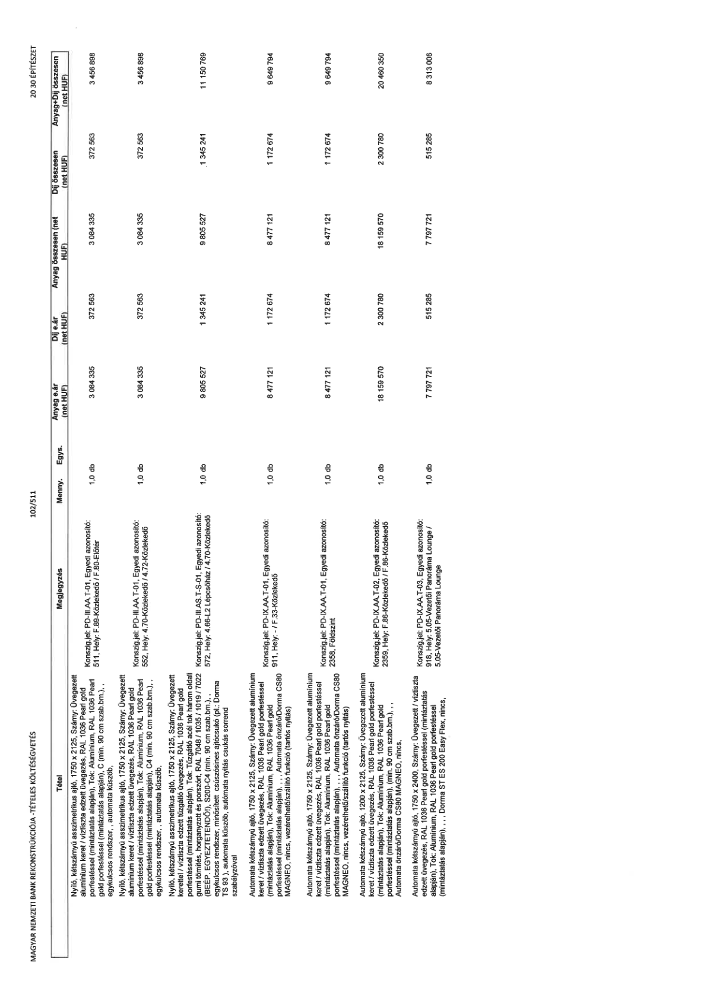

| Tétel | Megjegyzés | Menny. | Egys. | Anyag e.ár (net HUF) | Díj e.ár (net HUF) | Anyag összesen (net HUF) | Díj összesen (net HUF) | Anyag+Díj összesen (net HUF) |
|---|---|---|---|---|---|---|---|---|
| Nyíló, kétszárnyú asszimetrikus ajtó, 1750 x 2125, Szárny: Üvegezett alumínium keret / víztiszta edzett üvegezés, RAL 1036 Pearl gold porfestéssel (mintáztatás alapján), Tok: Alumínium, RAL 1036 Pearl gold porfestéssel (mintáztatás alapján), C (min. 90 cm szab.szél.), egységkulcsos rendszer,, automata küszöb, | Konszig.jel: PD-III.AA.T-01, Egyedi azonosító: 511, Hely: F.89-Közlekedő / F.80-Előtér | 1,0 | db | 3 084 335 | 372 563 | 3 084 335 | 372 563 | 3 456 898 |
| Nyíló, kétszárnyú asszimetrikus ajtó, 1750 x 2125, Szárny: Üvegezett alumínium keret / víztiszta edzett üvegezés, RAL 1036 Pearl gold porfestéssel (mintáztatás alapján), Tok: Alumínium, RAL 1036 Pearl gold porfestéssel (mintáztatás alapján), C4 (min. 90 cm szab.szél.), egységkulcsos rendszer,, automata küszöb, | Konszig.jel: PD-III.AA.T-01, Egyedi azonosító: 552, Hely: 4.70-Közlekedő / 4.72-Közlekedő | 1,0 | db | 3 084 335 | 372 563 | 3 084 335 | 372 563 | 3 456 898 |
| Nyíló, kétszárnyú asszimetrikus ajtó, 1750 x 2125, Szárny: Üvegezett kerettel / víztiszta edzett tűzgátló üvegezés, RAL 1036 Pearl gold porfestéssel (mintáztatás alapján), Tok: Tűzgátló acél tok három oldali gumi tömítés, horganyzott és porszórt, RAL 7048 / 1035 / 1019 / 7022 (BEÉP. EGYEZTETENDŐ!), S200-C4 (min. 90 cm szab.szél.), egységkulcsos rendszer, minősített csúszósínes ajtócsukó (pl.: Dorma TS 93 ), automata nyitás, automata nyitás csukás sorrend szabályzóval | Konszig.jel: PD-III.AS.T-S-01, Egyedi azonosító: 572, Hely: 4.66-L2 Lépcsőház / 4.70-Közlekedő | 1,0 | db | 9 805 527 | 1 345 241 | 9 805 527 | 1 345 241 | 11 150 769 |
| Automata kétszárnyú ajtó, 1750 x 2125, Szárny: Üvegezett alumínium keret / víztiszta edzett üvegezés, RAL 1036 Pearl gold porfestéssel (mintáztatás alapján), Tok: Alumínium, RAL 1036 Pearl gold porfestéssel (mintáztatás alapján).,, Automata önzáró/Dorma CS80 MAGNEO, nincs, vezérelhető/szállító funkció (tartós nyitás) | Konszig.jel: PD-IX.AA.T-01, Egyedi azonosító: 911, Hely: - / F.33-Közlekedő | 1,0 | db | 8 477 121 | 1 172 674 | 8 477 121 | 1 172 674 | 9 649 794 |
| Automata kétszárnyú ajtó, 1750 x 2125, Szárny: Üvegezett alumínium keret / víztiszta edzett üvegezés, RAL 1036 Pearl gold porfestéssel (mintáztatás alapján), Tok: Alumínium, RAL 1036 Pearl gold porfestéssel (mintáztatás alapján).,, Automata önzáró/Dorma CS80 MAGNEO, nincs, vezérelhető/szállító funkció (tartós nyitás) | Konszig.jel: PD-IX.AA.T-01, Egyedi azonosító: 2358, Földszint | 1,0 | db | 8 477 121 | 1 172 674 | 8 477 121 | 1 172 674 | 9 649 794 |
| Automata kétszárnyú ajtó, 1200 x 2125, Szárny: Üvegezett alumínium keret / víztiszta edzett üvegezés, RAL 1036 Pearl gold porfestéssel (mintáztatás alapján), Tok: Alumínium, RAL 1036 Pearl gold porfestéssel (mintáztatás alapján).,, Automata önzáró/Dorma CS80 MAGNEO, nincs, vezérelhető/szállító funkció (tartós nyitás) | Konszig.jel: PD-IX.AA.T-02, Egyedi azonosító: 2359, Hely: F.88-Közlekedő / F.86-Közlekedő | 1,0 | db | 18 159 570 | 2 300 780 | 18 159 570 | 2 300 780 | 20 460 350 |
| Automata kétszárnyú ajtó, 1750 x 2400, Szárny: Üvegezett / víztiszta edzett üvegezés, RAL 1036 Pearl gold porfestéssel (mintáztatás alapján), Tok: Alumínium, RAL 1036 Pearl gold porfestéssel (mintáztatás alapján).,, Dorma ST ES 200 Easy Flex, nincs, | Konszig.jel: PD-IX.AA.T-03, Egyedi azonosító: 918, Hely: 5.05-Vezetői Panoráma Lounge / 5.05-Vezetői Panoráma Lounge | 1,0 | db | 7 797 721 | 515 285 | 7 797 721 | 515 285 | 8 313 006 |
